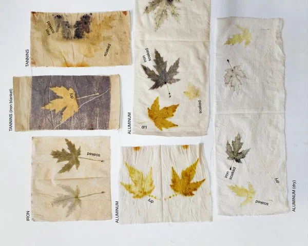
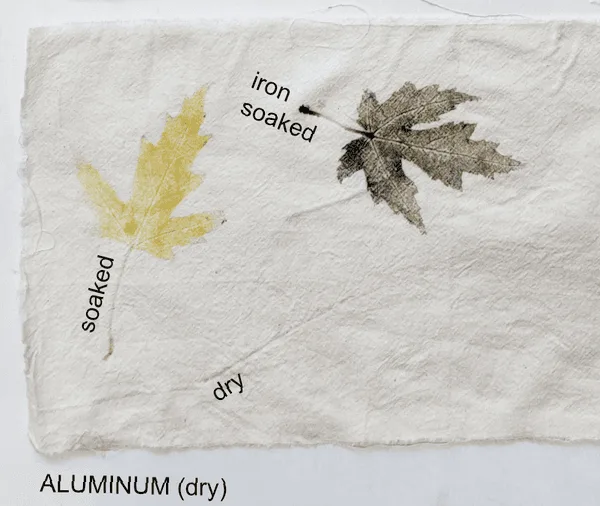
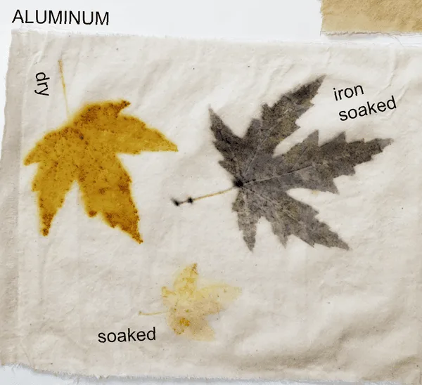
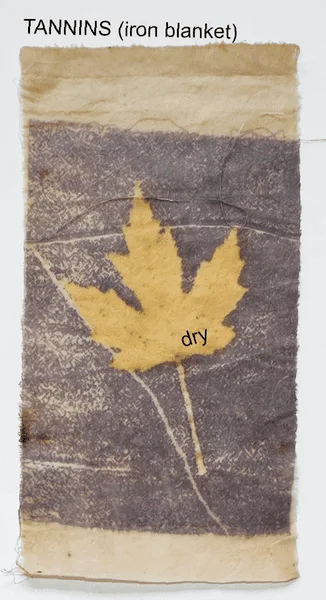

Do you ever feel like you want to make something but the ideas just aren't there? Everything you can think of is an image you've already seen on Pinterest or Instagram. Nothing feels exciting or original.
I have a remedy for that. When I feel like my well of creativity is empty, I don't overthink it. I simply choose a process I find interesting and start sampling, without anything particular in mind. Last week I ran some eco-print tests, so I can share the results and hopefully inspire you, and I walked away with five new ideas on how to incorporate eco-printing into my own work.
What is eco-printing
Eco-printing is the process of pressing the entire dye plant against the fabric and transferring the color while the plant stays flat. The difference between bundle dyeing and eco print is that in bundle dyeing you use pieces of the plant scattered over the cloth, while in eco print the entire image is transferred. When you bundle dye, there's no need to keep the image flat. In eco-printing, this is crucial, as it allows the plant to touch the fabric across its whole surface.
For that reason, in eco-printing, you always need a rod to roll your cloth around, so that the rod can support an even plant-to-fabric transfer.

The process
- lay a (mordanted) piece of cloth flat,
- arrange the plants on top of the cloth,
- optionally, lay a piece of plastic barrier on top of the plants,
- roll the entire package very carefully and tightly around a wooden, metal, or plastic rod, can, or pipe,
- secure with a piece of string on a strip of fabric,
- and, finally, steam.
Variations
There are many variations you can incorporate into the process: choosing a mordant to start with; using a barrier or letting the image soak through the layers; which side of the leaf faces up; soaking or drying the leaves before printing; working with wet or dry fabric; using an iron blanket to produce a negative image… to name a few.
My sampling is by no means extensive, but it was enough to get my creativity going and, hopefully, to inspire you to run your own tests too.
My samples
The base for all my samples was a piece of aluminum-mordanted cotton and mostly maple leaves I collected in my local park in Berlin.
My sampling variations were:
- aluminum-mordanted cloth vs. aluminum+tannins vs. aluminum+iron (all damp)
- wetted aluminum-mordanted fabric vs. dry aluminum-mordanted fabric
- aluminum+tannins vs. aluminum+tannins with an iron blanket on top
- dry pressed leaves vs. pressed leaves soaked in tap water for 10 days vs. pressed leaves soaked in iron water for 10 days
Here are the results



Learnings
- soaking leaves in water helps to achieve clearer prints and reduce the halo effect;
- soaking leaves in iron water before printing on aluminum is a great way of producing very dark prints while keeping the background white;
- eco-printing on aluminum+iron results in a less contrasting print: a beautiful muted green with a rusty background;
- all leaves print consistently better on the veins side (underside);
- adding tannins to the background muted the result (note: I didn't print any maple leaves here);
- starting with dry cloth and soaked leaves makes for the most striking, clearest prints, while a soaked cloth with dry leaves produces a watercolor-like image;
- dry-on-dry has no chance of transferring the dyes when working with a plastic barrier; at least one of the elements needs to be wet, or try sampling without plastic and see what happens;
- the iron blanket is simply a piece of cloth dipped in iron water and laid on top of the arrangement; the leaf works as a dye resist, while iron reacts with tannins.
What's next
I picked up some second-hand T-shirts last week which I'm planning on decorating with leaves. I usually collect leaves in autumn and press them between the pages of big books to use later in the year. Fresh spring leaves don't have the same dyeing potential, so it's important to stock up. It's possible to still find leaves in winter, at least where I live, so don't worry about having to wait another 10 months. I never pick leaves directly from the tree (it doesn't feel right to me), but rather collect what's already on the ground.
Maple leaves are my favorite to work with because of their beautiful intricate shapes and wonderful dyeing potential, but I'd encourage you to test other species too. You can also eco-print with flowers — the process is the same, and just like with any dyeing technique, it's best to start by sampling to get a proper hang of it.
I'd be curious to know if you've tried eco-printing in the past and, if so, whether you learned anything you'd like to share.